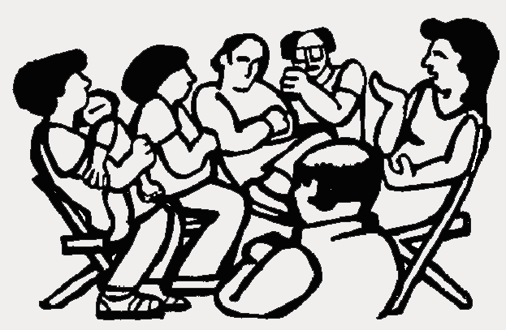

Submitted on Sat, 01/21/2006 - 6:02am
The author of this article refers to the IWW's "violent" past, but he fails to note that the violence was caused by the employing class in reaction to the IWW at least 99% of the time. Otherwise the article gives the IWW fair coverage. . .
As the transit strike drama has played out on television and in newspapers, the public eye has watched union members pack conference rooms in nice hotels, their angry leaders speaking loudly from a pulpit about the gall of government officials.
Submitted on Thu, 01/19/2006 - 4:35am
Coffee Giant Has Lower Percentage of Insured Workers Than Wal-Mart
 New York, NY- The myth of a socially responsible Starbucks is steadily unraveling with an admission by the coffe chain that less than half of its employees are covered by company health care. The revelation is all the more remarkable since the company has long promoted itself as a leader in employee health care while the actual percentage of Starbucks workers covered is less than that of Wal-Mart, a corporation notorious for the burden it places on taxpayers via uninsured workers.
New York, NY- The myth of a socially responsible Starbucks is steadily unraveling with an admission by the coffe chain that less than half of its employees are covered by company health care. The revelation is all the more remarkable since the company has long promoted itself as a leader in employee health care while the actual percentage of Starbucks workers covered is less than that of Wal-Mart, a corporation notorious for the burden it places on taxpayers via uninsured workers.
"The Starbucks socially responsible image is all smoke and mirrors. Customers always ask, 'you get company health care, right?'" said Pete Montalbano, an IWW barista. "Starbucks employees, many of whom are uninsured or on Medicaid, knew the answer to that all along. Only now, so does everyone else."
Submitted on Sun, 01/15/2006 - 5:42pm
By "Free Radical" - Originally posted at Chicago Indymedia.
On January 14, 2005, members of the Chicago General Membership Branch of the Industrial Workers of the World labor union (IWW) called for an informational picket to boycott the Ideal Hand Car Wash in Chicago’s Albany Park neighborhood after the managers and owners of the business refused to pay Neal Rysdahl, a longtime member of the IWW, the $227.50 he was owed for over 45 hours of work he preformed for them.
The highly visible protest began at 8 AM, with a small but dedicated group of picketers banging bucket drums, shaking noisemakers, passing out leaflets, and carrying signs reading, “Ideal Car Wash Cheats Workers,” and “An Injury to One is an Injury to All!” Notably, one picketer dressed in a clown costume held a sign reading, “Ideal Bosses Are Bozos!” to mock the clown Ideal usually uses to attract customers.
Submitted on Thu, 01/05/2006 - 3:02am
By DANIELA GERSON - Staff Reporter of the New York Sun, January 4, 2006
The Wobblies are back. Organizers with the 101-year-old Industrial Workers of the World - a radical union that once included "Big Bill" Haywood, Helen Keller, and "Mother" Mary Harris Jones - recently launched efforts in New York to organize Starbucks, illegal immigrant workers, and the online grocer FreshDirect.
"Abolition of the wage system" is their banner.
Membership, albeit still small, has roughly doubled in the past five years to nearly 2,000 in North America, the union said. In New York City, where it has about 50 or 60 members, there has been a similar rate of growth. Even more significant than an increase in membership, arguably, is the expansion of public actions.
Submitted on Thu, 12/22/2005 - 2:33pm
From starbucksunion.org:
As a recipient of support from TWU Local 100 members on our picket lines, it is with great honor that we express our total solidarity with striking transit workers in New York City. We know you are striking not only for your families but also for every working New Yorker.
Corporations, public or private, are concerned with two things: money and power. Since the MTA's last-minute bargaining demand would have saved less money than two day's worth of overtime for cops to patrol struck stations, it follows that power was the element at issue. The two-tier pension scheme the MTA tried to impose had the singular intent of weakening the union. By dividing senior workers from newer workers, two-tier schemes undermine solidarity within a union. They also provide an incentive for the bosses to concoct pretexts to get rid of more senior workers to save money. The supermarket bosses imposed such a two-tier contract on 70,000 striking and locked out grocery workers in 2004. But in 2005, TWU Local 100 and affiliated unions said, "No."